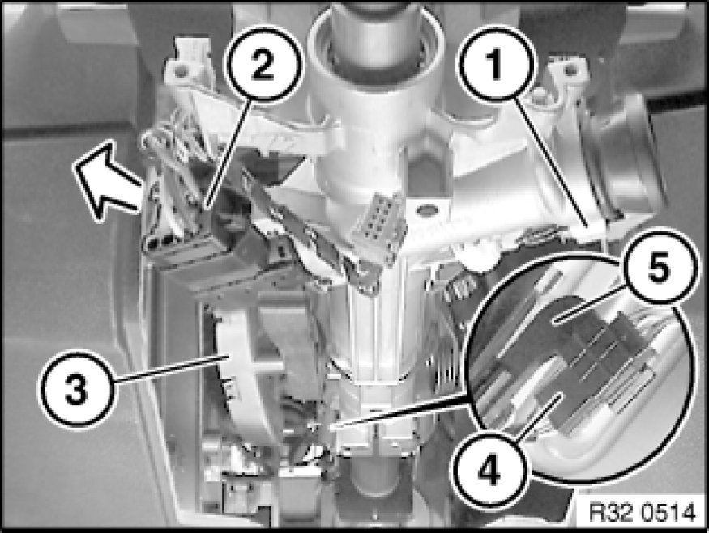
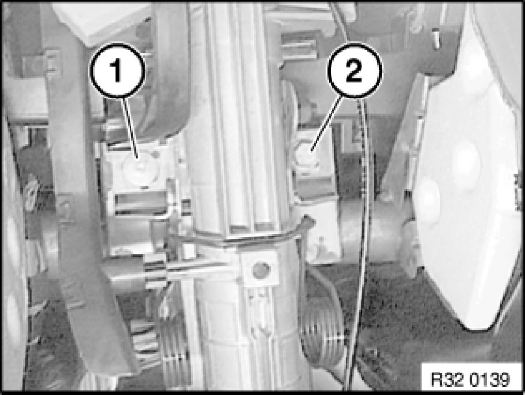
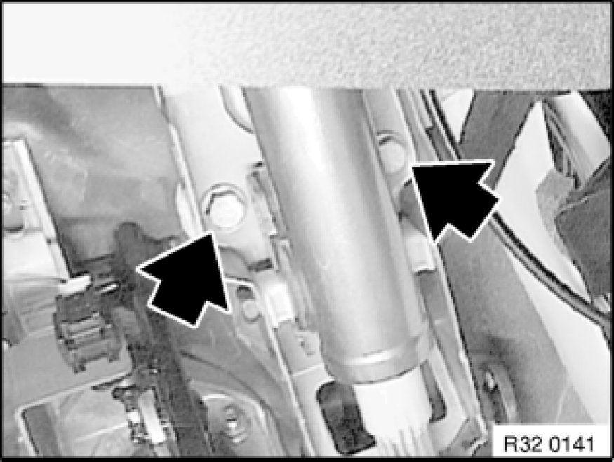

Removing and Installing/Replacing Steering Column
32 31 090 - Removing and installing/replacing steering column

Necessary preliminary tasks:
- Slide upper section of steering spindle into steering column (see Replacing steering spindle sleeve Replacing Steering Spindle Sleeve)
- Remove fixture for steering column stalks Removing and Installing/Replacing Fixture for Steering Column Stalk

Disconnect plug connections (1, 2).
If necessary, remove interlock cable from steering column Procedures.
Expose wiring harness and remove from cable duct (3).
Turn holder (5) approx. 45° downwards and remove.
Remove plug connection (4) from holder (5) and disconnect.

Release screws (1, 2).
Tightening torque 32 31 6AZ [1][2]Specifications.

Unscrew nuts.
Remove steering column towards rear through instrument panel.
Installation:
Replace self-locking nuts.
Tightening torque 32 31 15AZ [1][2]Specifications.

Replacement:
- Modify cable duct
- Modify lock cylinder Removal and Replacement
- Modify steering angle sensor Service and Repair
After installation:
- Carry out steering angle sensor adjustment Adjustments
- Perform function check:
-I)
- Check for ease of movement in overall adjustment range of steering column to adjoining components/wires
-II)
- Turn steering wheel in both directions to full lock. The airbag warning lamp must not light up in the process.
- Check directional stability of vehicle